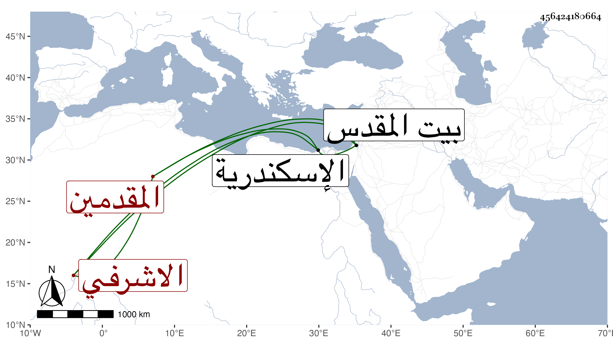

0902Sakhawi.DawLamic.ITO20230111-ara1.EIS1600.456424180664
Biography ID: 456424180664
215
جانبك الاشرفي برسباي أحد المقدمين ويعرف بالمشد ، استقر به الاشرف اينال في الشربخاناه ثم اضاف إليه الظاهر خشقدم معها التقدمة إلى أن أمسكه في جماعة من الاشرفية وسجن باسكندرية ثم نقل إلى القدس ثم افرج عنه الاشرف قايتباي وقدم فأقام ببيته بالقرب من باب سر جامع قوصون واختص به التقي الحصني . ومات بطالا في رمضان سنة احدى وثمانين وكان له مشهد حافل وشهد السلطان الصلاة عليه بمصلى المؤمني ودفن بتربة قريبة من تربة استاذه ، وكان راميا معدودا متدينا مبجلا رحمه الله .
